Sol: kırpılmış görsel · Sağ: metin olarak çıkarılan hâl
| 1 TY39206 T1·1 s.1 |
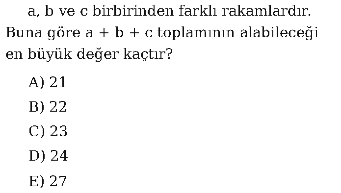 |
Matematik · Temel Kavramlar a, b ve c birbirinden farklı rakamlardır. Buna göre a + b + c toplamının alabileceği en büyük değer kaçtır?
Cevap: D |
| 2 TY85052 T1·2 s.1 |
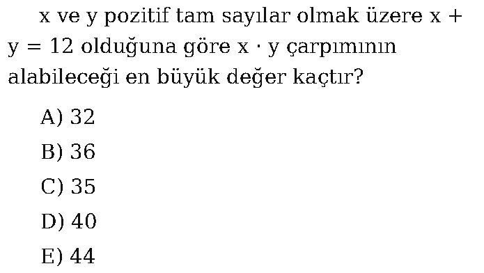 |
Matematik · Temel Kavramlar x ve y pozitif tam sayılar olmak üzere x + y = 12 olduğuna göre x · y çarpımının alabileceği en büyük değer kaçtır?
Cevap: B |
| 3 TY89082 T1·3 s.1 |
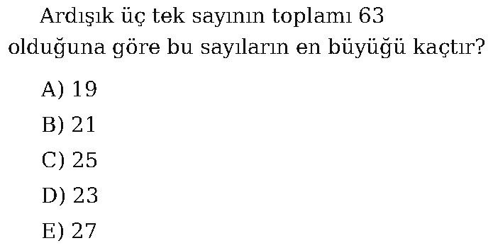 |
Matematik · Temel Kavramlar Ardışık üç tek sayının toplamı 63 olduğuna göre bu sayıların en büyüğü kaçtır?
Cevap: D |
| 4 TY92361 T1·4 s.1 |
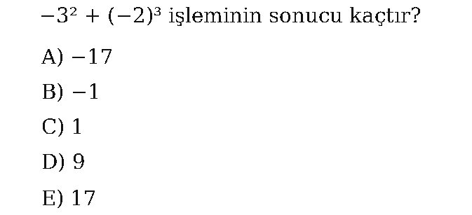 |
Matematik · Temel Kavramlar −3² + (−2)³ işleminin sonucu kaçtır?
Cevap: A |
| 5 TY32719 T1·5 s.1 |
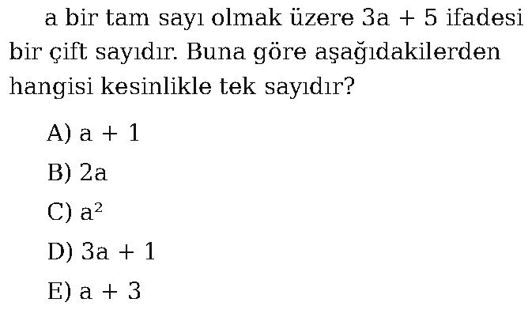 |
Matematik · Temel Kavramlar a bir tam sayı olmak üzere 3a + 5 ifadesi bir çift sayıdır. Buna göre aşağıdakilerden hangisi kesinlikle tek sayıdır?
Cevap: C |
| 6 TY20597 T1·6 s.1 |
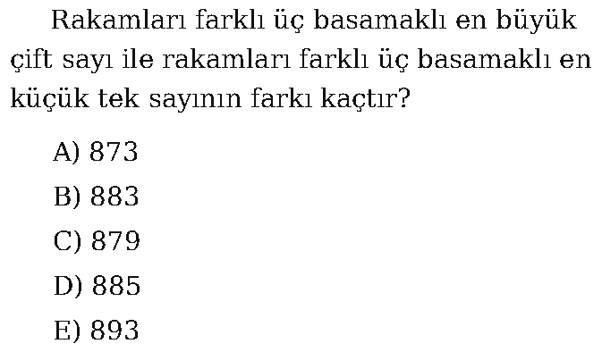 |
Matematik · Temel Kavramlar Rakamları farklı üç basamaklı en büyük çift sayı ile rakamları farklı üç basamaklı en küçük tek sayının farkı kaçtır?
Cevap: B |
| 7 TY34387 T1·7 s.2 |
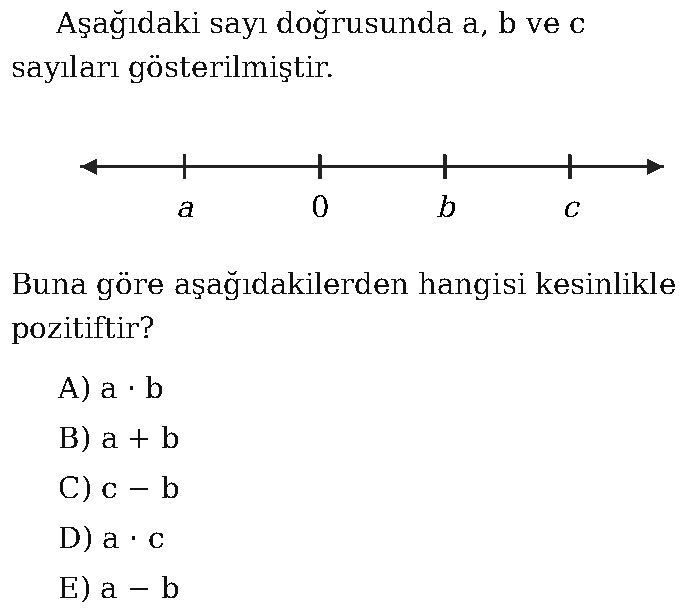 |
Matematik · Temel Kavramlar Aşağıdaki sayı doğrusunda a, b ve c sayıları gösterilmiştir. 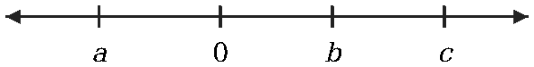 Buna göre aşağıdakilerden hangisi kesinlikle pozitiftir?
Cevap: C |
| 8 TY77522 T1·8 s.2 |
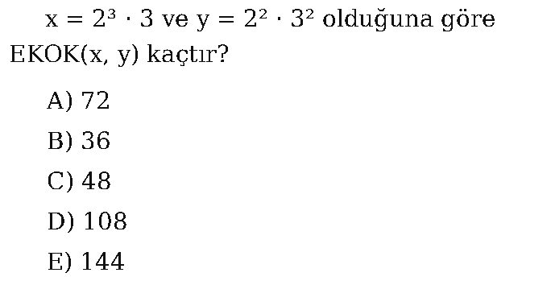 |
Matematik · Temel Kavramlar x = 2³ · 3 ve y = 2² · 3² olduğuna göre EKOK(x, y) kaçtır?
Cevap: A |
| 9 TY68740 T1·9 s.2 |
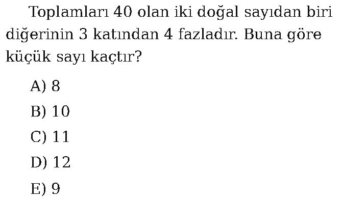 |
Matematik · Temel Kavramlar Toplamları 40 olan iki doğal sayıdan biri diğerinin 3 katından 4 fazladır. Buna göre küçük sayı kaçtır?
Cevap: E |
| 10 TY14561 T1·10 s.2 |
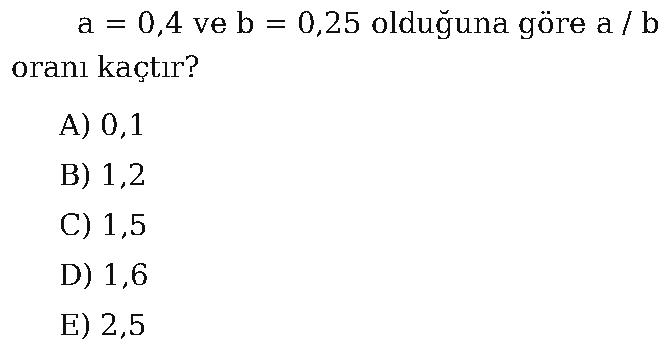 |
Matematik · Temel Kavramlar a = 0,4 ve b = 0,25 olduğuna göre a / b oranı kaçtır?
Cevap: D |
| 11 TY76630 T2·1 s.3 |
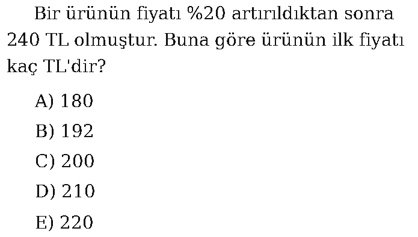 |
Matematik · Yüzde Problemleri Bir ürünün fiyatı %20 artırıldıktan sonra 240 TL olmuştur. Buna göre ürünün ilk fiyatı kaç TL'dir?
Cevap: C |
| 12 TY82620 T2·2 s.3 |
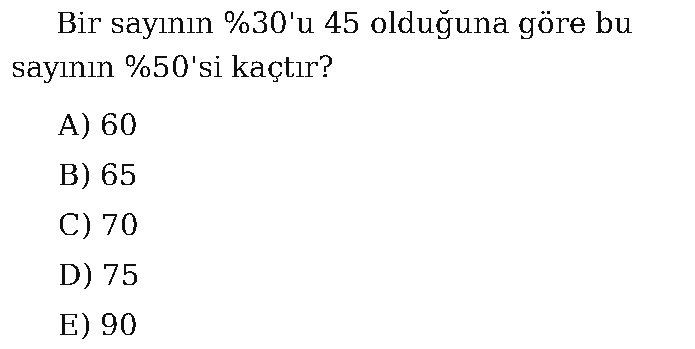 |
Matematik · Yüzde Problemleri Bir sayının %30'u 45 olduğuna göre bu sayının %50'si kaçtır?
Cevap: D |
| 13 TY72634 T2·3 s.3 |
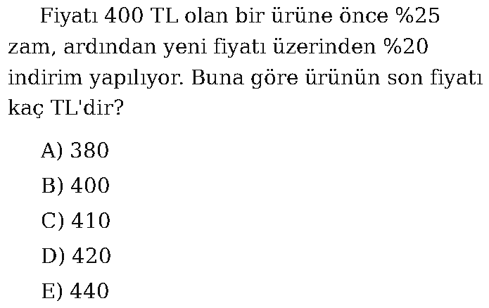 |
Matematik · Yüzde Problemleri Fiyatı 400 TL olan bir ürüne önce %25 zam, ardından yeni fiyatı üzerinden %20 indirim yapılıyor. Buna göre ürünün son fiyatı kaç TL'dir?
Cevap: B |
| 14 TY61193 T2·4 s.3 |
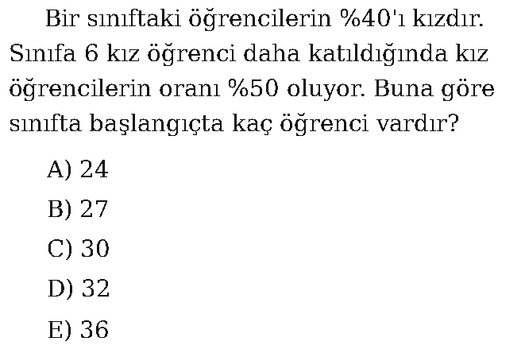 |
Matematik · Yüzde Problemleri Bir sınıftaki öğrencilerin %40'ı kızdır. Sınıfa 6 kız öğrenci daha katıldığında kız öğrencilerin oranı %50 oluyor. Buna göre sınıfta başlangıçta kaç öğrenci vardır?
Cevap: C |
| 15 TY26399 T2·5 s.3 |
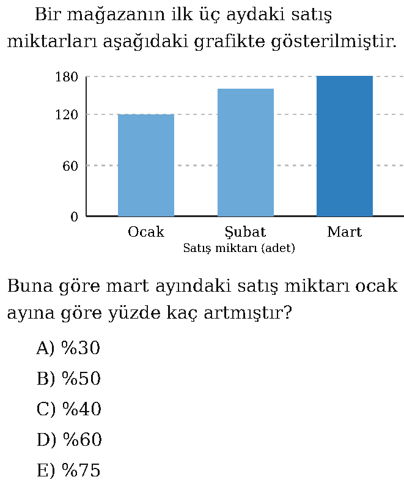 |
Matematik · Yüzde Problemleri Bir mağazanın ilk üç aydaki satış miktarları aşağıdaki grafikte gösterilmiştir. 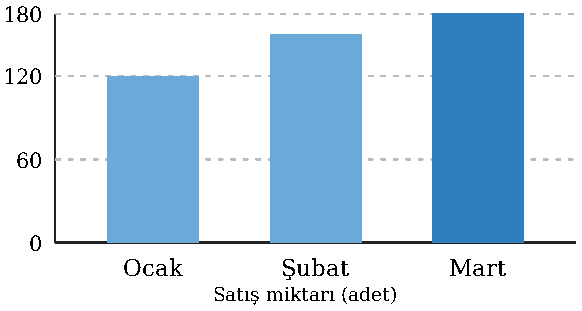 Buna göre mart ayındaki satış miktarı ocak ayına göre yüzde kaç artmıştır?
Cevap: B |
| 16 TY71029 T2·6 s.3 |
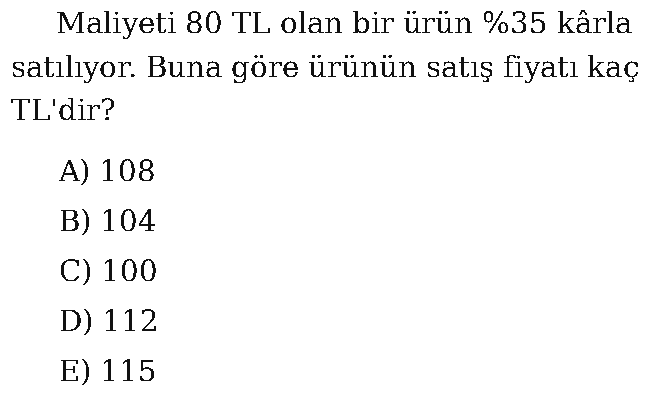 |
Matematik · Yüzde Problemleri Maliyeti 80 TL olan bir ürün %35 kârla satılıyor. Buna göre ürünün satış fiyatı kaç TL'dir?
Cevap: A |
| 17 TY12003 T2·7 s.4 |
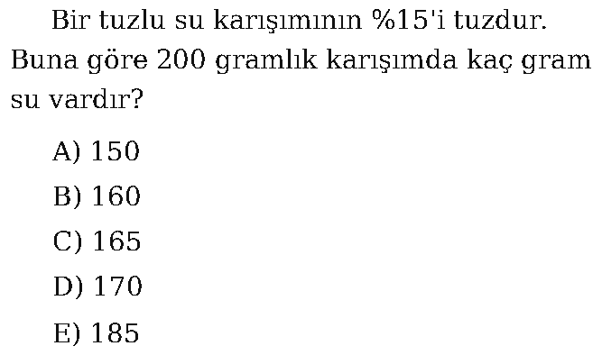 |
Matematik · Yüzde Problemleri Bir tuzlu su karışımının %15'i tuzdur. Buna göre 200 gramlık karışımda kaç gram su vardır?
Cevap: D |
| 18 TY69170 T2·8 s.4 |
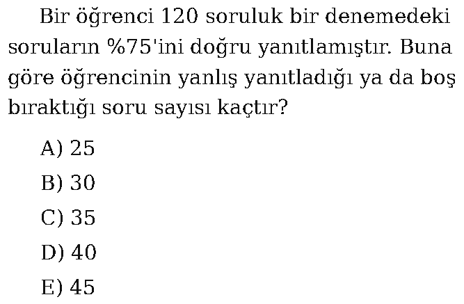 |
Matematik · Yüzde Problemleri Bir öğrenci 120 soruluk bir denemedeki soruların %75'ini doğru yanıtlamıştır. Buna göre öğrencinin yanlış yanıtladığı ya da boş bıraktığı soru sayısı kaçtır?
Cevap: B |
| 19 TY26372 T2·9 s.4 |
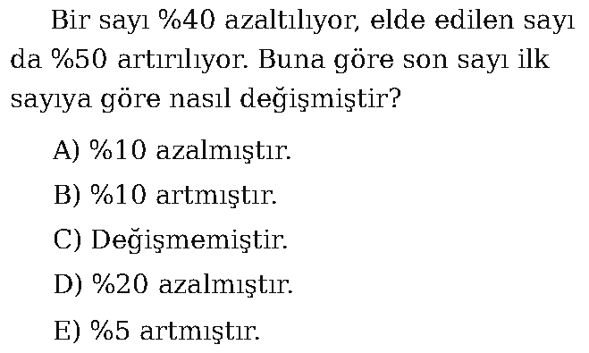 |
Matematik · Yüzde Problemleri Bir sayı %40 azaltılıyor, elde edilen sayı da %50 artırılıyor. Buna göre son sayı ilk sayıya göre nasıl değişmiştir?
Cevap: A |
| 20 TY14913 T2·10 s.4 |
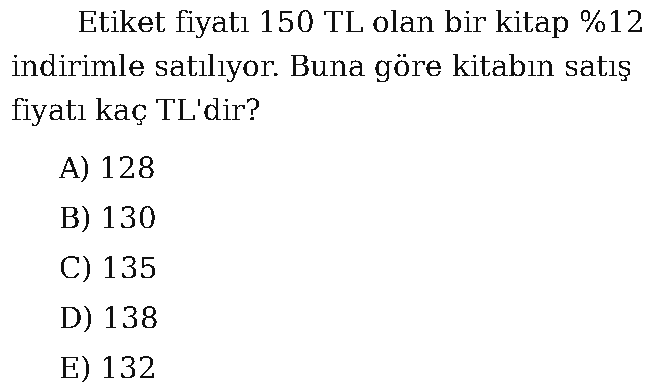 |
Matematik · Yüzde Problemleri Etiket fiyatı 150 TL olan bir kitap %12 indirimle satılıyor. Buna göre kitabın satış fiyatı kaç TL'dir?
Cevap: E |
| 21 TY18166 T3·1 s.5 |
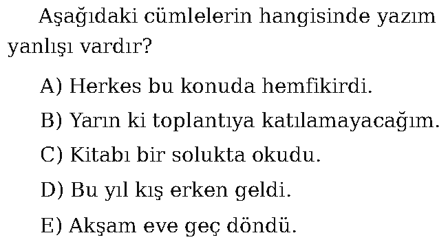 |
Türkçe · Yazım Kuralları Aşağıdaki cümlelerin hangisinde yazım yanlışı vardır?
Cevap: B |
| 22 TY74556 T3·2 s.5 |
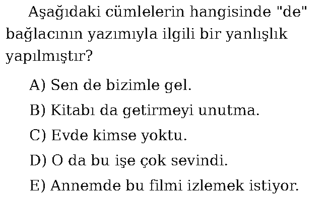 |
Türkçe · Yazım Kuralları Aşağıdaki cümlelerin hangisinde "de" bağlacının yazımıyla ilgili bir yanlışlık yapılmıştır?
Cevap: E |
| 23 TY67914 T3·3 s.5 |
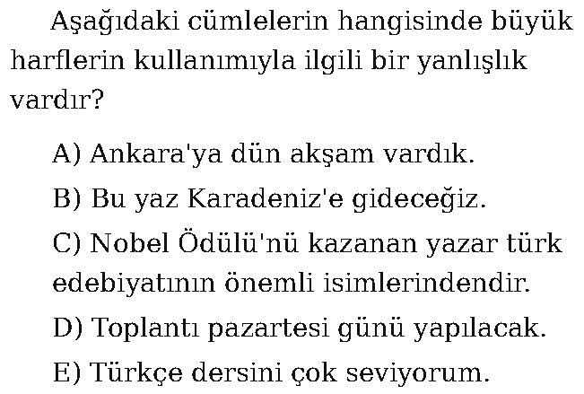 |
Türkçe · Yazım Kuralları Aşağıdaki cümlelerin hangisinde büyük harflerin kullanımıyla ilgili bir yanlışlık vardır?
Cevap: C |
| 24 TY79913 T3·4 s.5 |
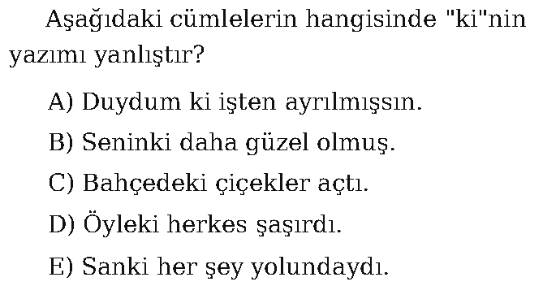 |
Türkçe · Yazım Kuralları Aşağıdaki cümlelerin hangisinde "ki"nin yazımı yanlıştır?
Cevap: D |
| 25 TY28655 T3·5 s.5 |
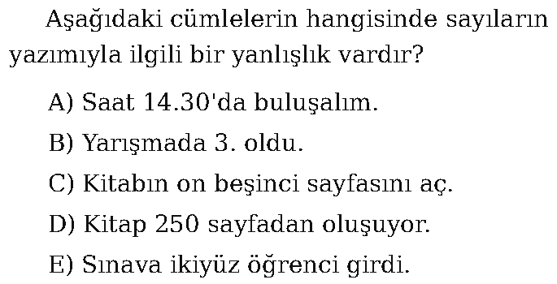 |
Türkçe · Yazım Kuralları Aşağıdaki cümlelerin hangisinde sayıların yazımıyla ilgili bir yanlışlık vardır?
Cevap: E |
| 26 TY92613 T3·6 s.5 |
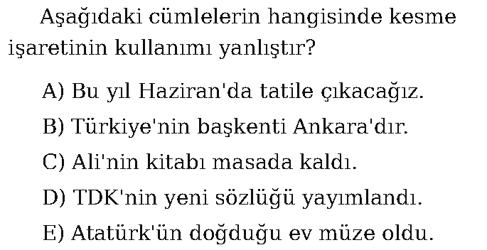 |
Türkçe · Yazım Kuralları Aşağıdaki cümlelerin hangisinde kesme işaretinin kullanımı yanlıştır?
Cevap: A |
| 27 TY33459 T3·7 s.6 |
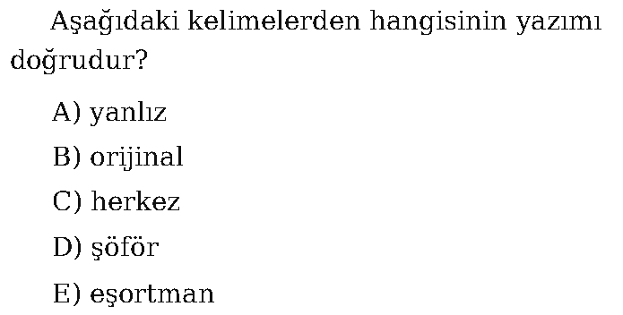 |
Türkçe · Yazım Kuralları Aşağıdaki kelimelerden hangisinin yazımı doğrudur?
Cevap: B |
| 28 TY10578 T3·8 s.6 |
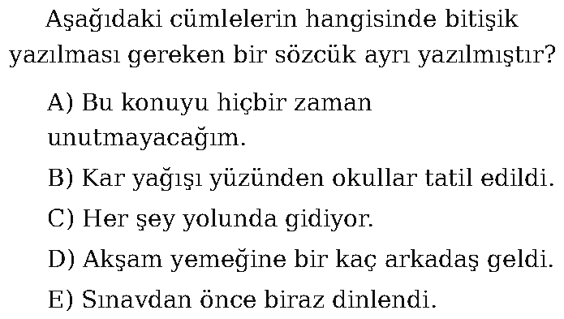 |
Türkçe · Yazım Kuralları Aşağıdaki cümlelerin hangisinde bitişik yazılması gereken bir sözcük ayrı yazılmıştır?
Cevap: D |
| 29 TY10180 T3·9 s.6 |
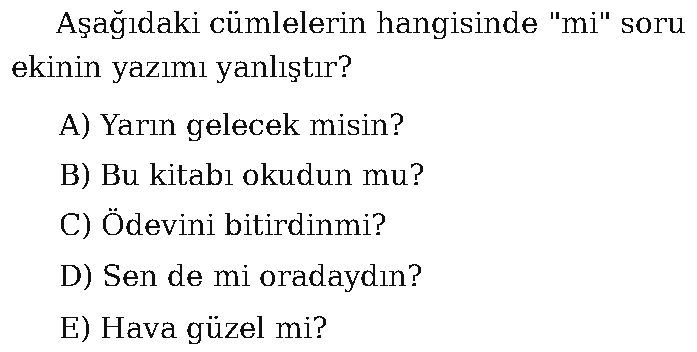 |
Türkçe · Yazım Kuralları Aşağıdaki cümlelerin hangisinde "mi" soru ekinin yazımı yanlıştır?
Cevap: C |
| 30 TY26225 T3·10 s.6 |
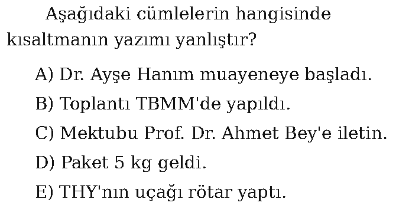 |
Türkçe · Yazım Kuralları Aşağıdaki cümlelerin hangisinde kısaltmanın yazımı yanlıştır?
Cevap: E |